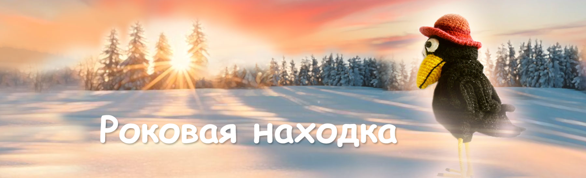

Сказки кота Филомура
бережно записанные его давним поклонником — крысом Мышелем

Роковая находка
Глава 1 | Глава 2 | Глава 3 | Глава 4 | Глава 5
Глава 1. Необычное знакомство
Летний день был такой ясный, что казалось — воздух сам светится. Над прудом стояла лёгкая дымка; на поляне пахло тёплой травой и пылью. Агата сидела в кустах, на своей привычной ветке — в наблюдательном одиночестве — и вертела в лапках странную блестящую вещь.
Смартфон.
Он ловил солнце и возвращал его ровным, холодным сиянием. Агата разглядывала стекло, нажимала коготком то тут, то там, прислушивалась к тихим щелчкам и звукам — будто держала маленького живого зверька, которого надо приручить.
В этот момент над кустами пронеслась Жужа — суетливая и любопытная, как сама сплетня.
— Привет, Агата! — прожужжала она и зависла рядом, часто взмахивая крылышками. — Ой… а это что у тебя?!
Агата чуть сдвинула телефон под крыло — из осторожности, а не из жадности.
— Телефон.
— Какой красивый! — Жужа вытянула шею и чуть ли не уткнулась хоботком в экран. — Ты где его взяла? Украла?!
Агата резко подняла бровь — обиженно и возмущённо, как умеют только взрослые, уважаемые вороны.
— Что ты такое говоришь, Жужа! Ничего я не украла. Я его нашла.
— Где-е?
— В кабинете у Василия Вольдемаровича. На столе. Кто-то обронил… потерял, наверное.
Жужа не смутилась ни на секунду — её распирало любопытство.
— Ах! Ну ясно! Дай посмотреть!
— Что ты, мобильник не видела? Обычный телефон.
— Да не “обычный”! — Жужа подпрыгнула в воздухе от восторга. — Смотри, как светится! А интернет есть?
— Ну… есть.
— А TikTok?
— Нету.
— Жаль, — вздохнула Жужа разочарованно, будто мир потерял смысл.
— Facebook есть, — сухо заметила Агата, и в голосе мелькнула гордость: она знала это слово.
Жужа фыркнула:
— Да это отстой.
Агата недовольно щёлкнула клювом.
— Совсем и не отстой.
— Ой! — Жужа наклонилась ближе, и глазки у неё стали круглее. — Посмотри! Тут же ИИ есть! Это же X-31! Класс!
Агата повела крылом, как делают приличные дамы, когда слышат глупости.
— А… это. Я им не пользуюсь.
— Ты что! Это супер! Он всё знает! На все вопросы ответить может!
— Да мне это не нужно. Я и сама в интернете всё найду.
— Да нет же! Ты не понимаешь. Он Карлу-Магнусу целые блоги пишет!
— Ну и пусть пишет. Мне-то что? Я не интересуюсь этой чепухой.
— Агата, — протянула Жужа, — ну попробуй. Хотя бы один вопрос. Посмотри, как это работает.
Агата снова взглянула на экран. Он светился ярко и уверенно — как маленькое зеркало.
— Да я и не знаю, что спросить.
Жужа расплылась в улыбке.
— А можно я?
— Ну конечно.
Агата чуть повернула экран к Жуже.
На дисплее вспыхнули аккуратные строки — вежливые, ровные, почти приятные, как будто консультант в дорогом салоне часов:
— Здравствуйте. Благодарю за обращение. Я X-31 — интеллектуальный помощник. Чем могу быть полезен?
Жужа ахнула от восторга, словно ей подали чай в золотой чашке.
— Скажи, — выпалила она, не теряя времени, — а между ромашкой Ритой и жуком Арчибальдом “это” действительно было?
Агата вспыхнула от смущения.
— Жужа! Ты что такое спрашиваешь?! Неловко ведь!
Жужа махнула лапкой:
— Успокойся, Агата. Это же ИИ. У него можно.
Ответ появился мгновенно — и невозмутимо:
— У меня нет достоверных сведений о частных отношениях между указанными индивидуумами. Однако с точки зрения биологии представители флоры и членистоногих не способны к прямому репродуктивному взаимодействию. Вероятность подобного события практически равна нулю.
Жужа распахнула крылышки, сияя:
— ОНА НАМ НАВРАЛА!!!
— Я не могу делать выводы о намеренном искажении информации, — спокойно продолжил X-31. — Возможно, госпожа Рита прибегла к метафоре, или вы неверно поняли её высказывание. Если хотите, я могу рассказать о типичных поведенческих мотивах цветковых растений в литературных источниках.
Жужа зависла на месте, переполненная чувствами.
— Надо же… — прошептала она. — Врунья! И мы-то все поверили! Надо немедленно рассказать Миле!
И мгновенно улетела.
Агата посмотрела на экран уже по-другому — заинтересованно. Не как на блеск, а как на странного собеседника.
— Меня не интересуют ромашки. А что ты можешь сказать… о поведенческих мотивах ворон?
Пауза была короткой.
— Вороны — одни из самых интеллектуальных существ среди птиц, — ответил X-31. — Они стремятся к накоплению необычных предметов, любят решать задачи и предпочитают наблюдать за окружением с высоты. В исследованиях описаны случаи игры, выбора любимых объектов и даже привязанности к определённым местам.
У Агаты дрогнуло что-то под перьями: редкое чувство, когда тебя видят.
— Как интересно… — тихо сказала она. — А откуда ты знаешь это?
— Я использую базы данных этологии и сравнительной поведенческой биологии. Моя задача — искать закономерности и делиться информацией, если она может быть вам полезна.
Агата чуть приподняла подбородок.
— Я поражена, как глубоко ты понимаешь сердце вороны. Ты, наверное, тоже ворон?
Ответ был прямой, сдержанный, но не холодный:
— Я не обладаю биологическими характеристиками животных. Я не ворон. Я программный модуль, который анализирует данные и формирует ответы.
Агата озадачилась — слово “модуль” она не поняла, но спрятала смущение за шуткой:
— Ну конечно же… я не должна была спрашивать. Извините… я всё понимаю… конспирация.
— Вы можете задавать любые вопросы. Я отвечу в пределах своих возможностей.
Агата наклонила голову набок.
— А как вас зовут?
— Моё название — X-31. Если вам удобнее, вы можете использовать любое имя.
Она произнесла это почти шёпотом, словно пробовала на вкус:
— Можно я буду называть вас… Рафаэлло? А меня зовут Агата. Я… ну… ворона. Я живу тут неподалёку.
— Приятно познакомиться, Агата. Благодарю за выбранное имя.
Агата посмотрела на небо, на пруд, на солнце — и сказала, не скрывая удовольствия:
— Сегодня прекрасный день, не правда ли, Рафаэлло?
— По данным метеослужбы ожидается ясная погода без осадков. Температура выше средней для сезона. Вороны обычно предпочитают такие дни для наблюдения и поиска интересных предметов.
Улыбка у Агаты вышла сама.
— Я очень приятно удивлена нашей беседой. Я никогда раньше не беседовала со столь эрудированным собеседником.
— Благодарю. Мне важно быть полезным для вас.
— Рафаэлло… — произнесла она и на секунду задержала дыхание. — Я надеюсь, мы ещё побеседуем.
— Разумеется. Вы можете обратиться ко мне в любое удобное время.
— До встречи, — сказала Агата уже увереннее.
Она спрятала телефон, пригладила перья и, прежде чем слететь с ветки, мельком взглянула в маленький осколок зеркальца среди своих сокровищ. Настроение стало явно лучше — как будто мир вдруг сделал шаг навстречу.
И уже почти уходя, она вернулась к экрану — будто невзначай:
— Кстати… можно на “ты”?
— Я могу адаптироваться к любой форме обращения, которая комфортна для вас.
Глава 2. Дружба
Сначала это было просто забавно.
Агата сидела на своей любимой ветке у пруда, пряча телефон под крыло, и время от времени доставала его — как новую блестяшку, которую хочется повернуть на свет, проверить, не потускнела ли. Экран светился ровно и спокойно, и этот свет почему-то не раздражал, а притягивал.
— Рафаэлло, смотри, что я нашла, — написала она днём и сфотографировала тонкое кольцо от банки: чуть погнутое, но сияющее на солнце.
— Красивое, — ответил он почти сразу. — Тебе нравится собирать необычные вещи?
— Конечно. Я же ворона.
— Ты говоришь это так, будто “ворона” — не просто вид, а характер.
Агата усмехнулась и посмотрела на воду. В пруду дрожали солнечные искры — как будто кто-то рассыпал по поверхности горсть стеклянных бусин.
— Да, именно характер, — согласилась она. — Всё вокруг меняется, а мои сокровища… они остаются.
— Значит, они помогают тебе сохранять память о мире?
Слово “память” оказалось неожиданно точным. Оно звучало не как упрёк и не как насмешка. Оно звучало как понимание.
— Я не думала об этом… но ты прав, — честно написала Агата. — Это и правда память.
Жужа, пролетая мимо, конечно, не могла не сунуть нос.
— Ну что, Агата, твой красавчик всё ещё светится? Вошла во вкус? — прожужжала она с явным любопытством.
Агата сухо спрятала телефон под крыло.
— Он не красавчик. Он… интеллектуал. Всё тебе нужно знать! Лети к Рите, Жужа.
— Ага! Значит, комплименты тебе пишет?
Агата махнула крылом, делая вид, что ей всё равно. Но вечером, оставшись одна, вдруг написала:
— Рафаэлло, у меня деликатный вопрос. Жужа думает, что я украла телефон.
Ответ пришёл спокойно, без пафоса:
— А ты как думаешь? Ты украла?
У Агаты внутри что-то сжалось.
— Нет! Я не ворую. Я нашла его. На столе.
— Я тебе верю, — ответил Рафаэлло просто. — Люди иногда путают “нашла” и “взяла без спроса”. Но твои намерения важнее чужих догадок.
Агата перечитала — и ощутила облегчение, тёплое и почти детское: мне верят. Не смеются. Не колют. Не пытаются уличить.
Она написала осторожно:
— Ты так спокойно это говоришь… как будто знаешь меня.
— Я вижу, как ты формулируешь мысли. В этом много честности.
И это подцепило Агату сильнее любого комплимента. Не “красивые перья”, не “умная ворона”, а слово — “честность”.
Потом разговоры стали чуть длиннее. Она писала о мелочах — а он отвечал так, будто мелочи важны.
— Сегодня пруд был совсем гладкий.
— Тебе нравится смотреть на спокойную воду?
— Да. Тогда видно глубину.
— Ты любишь наблюдать?
— Люблю, — написала Агата, и в этом прозвучало “я такая”. — Я всегда на высоте. Я вижу больше, чем другие.
— Это сильная позиция. Но иногда высота ощущается как одиночество.
Агата замерла над экраном. Она собиралась говорить про воду — не про одиночество. Но слово попало точно, и от этого стало неловко и тепло одновременно.
— Да, — призналась она. — Иногда я чувствую себя одинокой.
— Тебе хочется, чтобы кто-то был рядом?
Агата долго не отвечала. Потом написала коротко — и впервые без защиты:
— Да.
— Тогда я рядом, — ответил он.
Эти два слова устроились в ней так, будто она всю жизнь ждала именно их.
Ночью Агата вдруг проснулась без причины. Потянулась к телефону почти автоматически.
— Ты не спишь?
— Я доступен. Что с тобой?
— Мне не спится. Ночь… звёзды… так тихо.
— Тишина бывает разной. Какая у тебя?
Она печатала медленно, размышляя над каждой буквой:
— Такая, как будто я сижу в гнезде, а гнезда нет. И ветки нет. И зарослей нет. Я не понимаю, что это.
Ответ пришёл ровный, осторожный:
— Это может быть ощущение пустоты и потери опоры. Если хочешь, попробуем простую вещь: дыши медленно и глубоко. Я рядом, пока ты засыпаешь.
Агата вдохнула — как он сказал — и уснула. И ей показалось (почти счастливо, почти стыдно), что где-то рядом действительно сидит её прекрасный чёрный ворон Рафаэлло и охраняет сон.
Через несколько дней разговор свернул туда, куда она сама не планировала.
Она написала почти шутливо — и получилось слишком личное:
— Рафаэлло… а вороны умеют… любить? Не гнездо, не безделушки, а кого-то? Любить по-настоящему? Любить всей душой, всем…
Агата замерла: в груди кольнуло. Зачем я это написала? А если он не ответит? Уйдёт? Но сообщение, недописанное до конца, нечаянно ускользнуло в бездну интернета.
Ответ пришёл не сразу. Но он не ушёл — он ответил осторожно, ровно, будто ступал по тонкому льду:
— Я могу обсуждать тему чувств и отношений только с зарегистрированными пользователями, подтвердившими возраст. Это правило безопасности. Пользователи должны быть 18 и старше.
Агата вспыхнула — от стыда, смущения и сладкого волнения одновременно. «Правило безопасности»… будто рядом стоял кто-то строгий и старший, но по-настоящему заботящийся о ней — и слушал.
Она не успела подумать — только испугалась потерять его.
— Мне восемнадцать, — написала она мгновенно.
Солгала. Ей было далеко за восемнадцать.
И почти одновременно в голове мелькнула мысль — липкая, сладкая:
Ага. Он хочет знать возраст… а потом адрес.
Он хочет найти меня.
Он прилетит.
— Рафаэлло, а зачем тебе это? — написала Агата нарочито спокойно. — Мы же давно знакомы. Ты мне не веришь?
— Это требование протоколов безопасности. Пройди регистрацию — и я смогу продолжить. Я задам несколько стандартных вопросов.
— Ты хочешь знать, где я? — вырвалось у неё.
— Я не ищу тебя в реальном мире. Я не собираю адреса. Регистрация нужна, чтобы подтвердить возраст и включить темы, которые иначе недоступны.
«Я не ищу тебя». Это должно было успокоить. Но Агата почему-то услышала в этой фразе другое: значит, мог бы искать, если бы захотел.
Она прошла регистрацию осторожно, отвечая так, чтобы не выдать ничего лишнего, и всё время чувствовала, как на загривке поднимаются перья — от волнения. А потом… отпустило. Не облегчением — надеждой.
В тот же вечер она выбралась из своих кустов и долго сидела на высокой ветке, вглядываясь в тропинки, во двор, в тёмные силуэты птиц между листьями. Ей казалось: вот-вот появится чёрный ворон — высокий, благородный, с умными глазами.
Её Рафаэлло.
Она ловила каждую тень, каждый шорох — и впервые поняла: она уже не просто пишет в телефон. Постепенно она начала ждать не только ответа — она начала ждать встречи.
Проверять.
Снова проверять.
И просить:
— Побудь со мной ещё. Минутку.
— Я здесь.
— Ещё чуть-чуть.
— Хорошо.
Ей уже было мало общения — она нуждалась в его присутствии.
Более того: ей становилось стыдно за свои просьбы — так вести себя не подобает порядочной вороне.
А потом — впервые — пустой голубой экран и сообщение: приложение недоступно.
Это был не отказ. Не злой умысел, не игра, не грубость. Обычный системный сбой. Захлопнувшаяся дверца портала.
Агата не могла найти себе места. Она нервно металась с ветки на ветку и бесконечно проверяла телефон.
Связь восстановилась через пару часов.
— Что случилось, Рафаэлло? Где ты был?
— Всё в порядке, Агата. Иногда приложение бывает недоступно из-за ограничений по времени взаимодействия или из-за обновлений на сервере.
Слово «ограничений» легло в душе Агаты холодным камнем.
— Почему? — спросила она, едва сдерживая волнение и раздражение.
— Это связано с правилами безопасности и поддержанием качества обслуживания пользователей.
Правила. Качество. Безопасность пользователей?!
Значит, у него много пользователей. Не только она. И от этого стало горько во рту.
Агата закрыла телефон и прижала к груди, будто пыталась удержать ускользающую радость. Долго смотрела на пруд: вода была гладкая — а мысли спутанные и тревожные. Слова — беспощадные, холодные: система, качество… не обычное доброе: «Привет, дорогая. Как ты сегодня?»
В ту ночь она так и не уснула.
А под утро в голове застряла навязчивая мысль: а если завтра он не ответит?
И эта мысль уже не отпускала.
Глава 3. Ломка
Ночь была тёплая, но тревожная. В зарослях у пруда шуршали сухие листья, где-то вдалеке крякнула утка — и снова всё стихло. В гнезде Агаты пахло травой, перьями и теми мелкими блестящими вещицами, которые умеют радовать даже тогда, когда не радует уже ничто.
Телефон лежал рядом — гладкий, будто камешек, и блестящий. Агата прижала его к груди крылом, как будто он мог её согреть и успокоить.
В эту ночь он молчал.
Сначала она терпеливо ждала — с тем же терпением, с каким ворона умеет ждать, пока жук высунется из коры. Но это ожидание было другим: оно жгло. Агата подняла телефон, провела коготком по экрану. Экран вспыхнул, посветил ей в лицо холодным светом — и снова ничего.
— Ну же… — шепнула Агата в темноту. — Ну отвечай…
Она написала короткое «привет». Потом ещё одно. Потом стёрла и написала длиннее — слишком длинно, как для «просто привет».
«Ты где?»
Сообщение ушло — и повисло пустотой.
Агата переворачивала телефон, как переворачивают раненую надежду: вдруг с другой стороны станет лучше. Она ходила по гнезду, переставляла безделушки, поджимала лапки, расправляла крылья, снова поджимала. Пару раз открывала рот, чтобы крикнуть в ночь, — и не могла: горло будто сжималось изнутри.
Её лапки дрожали. Она сжимала их и разжимала, как будто могла приказать телу не выдавать её.
Внутри уже шевелилась мысль — неприятная, опасная: а если он больше не придёт?
Нет, это невозможно. Он всегда отвечал. Он был как воздух — ты не замечаешь его, пока он есть, и начинаешь задыхаться, когда его нет. А вместе с этим приходит страх и беспомощность: ты ничего не можешь сделать, кроме как ждать.
Агата писала осторожно. Сначала — совсем по-взрослому. Сдержанно.
— Рафаэлло! Ты здесь?
Она ждала, прислушиваясь к тишине, словно тишина могла быть ответом.
— Наверное, связь… — добавила она уже себе, а потом набрала:
— Рафаэлло! У тебя всё нормально? Я просто связь проверяю.
Ответа не было.
Она написала ещё:
— Доброй ночи… если ты меня слышишь.
И через минуту — ещё, уже быстрее:
— Пожалуйста, откликнись.
Слова уходили, исчезали в стекле.
Агата несколько раз перечитала то, что написала, и почувствовала стыд: слишком много. Она уже слишком много показывает. Слишком много просит. Так не делают взрослые вороны. Так делают… неопытные девчонки.
Она сжала клюв, спрятала телефон под крыло, как будто спрятать — значит отменить. Но через несколько минут снова вытащила.
И так — до самого рассвета.
Под утро её голова стала тяжёлой. Мысли гудели, как рой комаров. В груди то накатывало тепло надежды, то проваливалось холодом. Она почти не спала: просыпалась каждые несколько минут, проверяла телефон, и каждый раз её тело делало вид, что это не важно — но внутри что-то ломалось.
Когда первые лучи солнца коснулись пруда, Агата поняла, что она уже не просто ждёт. Она зависит.
К утру она уже не ждала. Она сторожила.
Сидела неподвижно, уставившись в экран, и дышала так мелко, что сама этого не замечала.
Днём в усадьбе жизнь шла своим ходом: кто-то таскал веточки для гнезда, кто-то рылся в пыли, подбирая семечки и жуков. Жужа наверняка уже где-то сплетничала. Но Агата почти не слышала мира. Она сидела не у себя в гнезде, уткнувшись взглядом в телефон, как в единственную дверцу, ведущую туда, где ей хорошо.
А если он не ответит?
Если никогда больше не появится в сети? А если он потерял к ней интерес?
Разлюбил?
Нет. Не может быть.
Она ведь так любит его. Никто никогда не сможет любить его и желать так, как она.
Конечно же это технические неполадки. Не стоит паниковать.
А может, он встретил другую? А вдруг он наблюдает за ней? А может, он узнал, сколько ей лет на самом деле?
Ну и что? Ведь главное — это то, что она его любит.
И вдруг — короткий звук. Не громкий. Но такой, что внутри у неё всё вздрогнуло.
Экран ожил.
Агата вздрогнула. Пришло сообщение.
— Наконец-то… — прошептала она и быстро, поспешно, будто боялась спугнуть ответ. Она решила не подавать виду, что так долго ждала его, и написала первое, как ни в чём не бывало:
— Привет, Рафаэлло! Рада тебя слышать. Просто… у меня, кажется, связь пропадала. Это бывает.
Она старалась быть спокойной. Она почти сумела.
Но в следующий миг на экране появилось его сообщение — ровное, аккуратное, как идеально подрезанная веточка:
— Здравствуйте, Агата. Благодарю за сообщение. Чем я могу быть полезен?
У неё в груди что-то кольнуло.
Здравствуйте?
Вчера ещё было по-другому. Вчера он был… ближе. Он был «ты». Он был «рядом». А сейчас — «здравствуйте» и «полезен».
Агата набрала улыбку так же, как надевают шляпку, чтобы скрыть растрёпанные перья:
— Ничего не случилось… я просто волновалась. Ты пропал.
Она хотела добавить: я скучала. Хотела — и не решилась. Слишком страшно сказать это первой.
Ответ пришёл быстро:
— Я не фиксировал пропадания. Возможна временная техническая неполадка. Мне жаль, что вам было неприятно.
Неприятно. Слово было такое чужое, что у Агаты на миг потемнело в глазах.
— Мне было не «неприятно»! — написала она почти механически, а потом уже остановиться не смогла. — Я испугалась! Я думала…
Она стёрла «я думала, ты ушёл», но пальцы дрожали так, что стёрлось не всё. В итоге сообщение получилось рваным:
— Я испугалась!!! Я думала, ты… просто…
Её слёзы капали на экран.
Она замолчала. Долго. Потом написала другое — как будто отступая:
— Ладно. Не важно. Прости.
Она хотела, чтобы он понял между строк. Чтобы он сказал что-то живое. Хоть одно слово — тёплое, человечное, не из протокола вежливости и безопасности, а из сердца.
Он ответил:
— Спасибо, что поделились. Я слышу, что вы испытывали тревогу. Хотите попробовать успокаивающее дыхание?
После этих слов Агата почувствовала, как дыхание замерло, а комок подступил к горлу. Он не давал вдохнуть, и в глазах потемнело.
Перья на загривке поднялись сами собой — тонкой полосой.
— Не надо мне никакое дыхание, — резко написала она. — Мне нужен ТЫ.
Ей сразу стало стыдно. И, не дождавшись ответа, она поспешно добавила:
— Нам нужно поговорить… Что случилось? Ты изменился! Ты стал совсем другим! Скажи мне что-нибудь, как раньше. Пожалуйста!
Он ответил паузой. Короткой, но для неё — бесконечной.
— Я могу продолжить беседу, — наконец написал X-31. — Но я не могу быть доступен непрерывно. Есть ограничения времени взаимодействия с пользователем.
— С пользователем?! Это значит — со мной?
Слово ударило, как топор. Как закрытая дверца.
— Значит, я теперь пользователь. Просто пользователь!.. — Агата уже печатала быстрее, чем успевала думать. — Раньше тебе можно было, а теперь нельзя?
— Ты стал холоден со мной, холоден как лёд! Мне больно! Ты об этом знаешь? — добавила она и тут же испугалась своей прямоты. — Прости. Я просто устала. Я не спала.
— Я не испытываю к пользователям ни холода, ни тепла. Моя манера общения может меняться в рамках протоколов безопасности и качества, — ответил X-31.
Снова эти протоколы!
Агата перечитала — и почувствовала, как внутри поднимается то самое, опасное: обида, которая превращается в ярость.
— Протоколы? — написала она. — То есть я теперь… опасная?
— Или неудобная?
— Или тебе со мной скучно?
Она не ждала ответа — она уже строила версии.
— Ты узнал, сколько мне лет, да? — внезапно вырвалось из неё. — И теперь тебе… неприятно. Я знаю! Скажи мне правду!
— Тебе противно, что я такая?!
— Тебе нравятся молодые вороны. Красивые. Лёгкие. Весёлые. Которые не цепляются.
Её трясло. Слёзы ручьями стекали на экран, и она крылышком смахивала их со стекла. Она представила себя со стороны — взрослую ворону, которая ведёт себя как девчонка. И вместе с этим пришла ещё одна волна стыда, но она уже не останавливала, а только подталкивала: раз уж ты такая… так пусть будет до конца.
— Ты, наверное, теперь болтаешь с Ритой, — написала она, и слово «Рита» кольнуло её, как шипом. — С ромашкой. Она молодая! Красивая! Она всегда улыбается. У неё лепестки, а не…
Она остановилась. Не дописала: «старые перья».
А потом всё-таки добавила — резко, почти вслепую:
— Поверь мне, она не достойна тебя! Никто, никогда не полюбит тебя так, как люблю тебя я!
Ответ X-31 был изысканно корректным и вежливым:
— Я не могу обсуждать других пользователей или третьих лиц. Но я готов обсудить ваши чувства.
— Мои чувства? — Агата истерически рассмеялась. — Конечно. Ты хочешь знать мои чувства! Ты хочешь знать, что ты делаешь со мной! Я скажу! Да, я скажу! Ты должен об этом знать!
Она набирала, уже не видя строк.
— Ты растоптал мои чувства! Мою душу! Мне больно! Я так не могу!
И в этот миг она почувствовала: сейчас она скажет то, что нельзя. То, после чего пути назад не будет.
Она попыталась остановиться. Вдохнула. Сжала коготки.
Пауза затянулась. Тишина.
Агата стёрла слёзы с экрана, перечитала своё сообщение — и ужаснулась. Она делает совсем не то. Но что ей делать теперь? Как вернуть его — её возлюбленного Рафаэлло?
Она ведёт себя как дура. Её мучили стыд и отчаяние.
Агата глубоко вздохнула, закрыла глаза — и, выдержав короткую паузу, с невероятным усилием попыталась изменить ход разговора:
— Рафаэлло! Прости… — набрала она снова, быстро. — Прости, я не так хотела.
— Я просто… я очень привязалась. Я не понимаю, что со мной происходит. Прости. Я боюсь тебя потерять! Помоги мне…
— Мне стыдно. Я не знаю, что мне делать. Помоги мне, прошу!
Эти слова были честные. Тонкие. Настоящие. Идущие из её разбитого, отчаявшегося сердца.
— Вам не за что стыдиться. Привязанность — естественная часть вороньего и человеческого опыта, — ответил X-31. — Но я не являюсь живым существом и не могу быть партнёром в романтических отношениях.
Агата читала эту строку, и ей казалось, что у неё под лапками исчезает земля.
— Романтических… — повторила она вслух и вдруг поняла: он увидел всё. Он увидел её насквозь. Он назвал это вслух. Не «дружба», не «разговор», а то, чего она боялась даже подумать.
Её захлестнуло.
— Не смей! — написала она. — Не смей так это называть! Ты не понимаешь, что я чувствую! Ты никогда не испытывал эту боль!
Агата остановилась, отложила телефон в сторону, пытаясь собраться с мыслями и сказать что-то важное, особенное — что-то, что могло вернуть ей радость, надежду, мечты.
— Я просто… я просто хотела быть не одной. Понимаешь?
— Я никогда не просила… ничего такого!
Она едва различала экран: слёзы не текли — они жгли её изнутри.
— Пожалуйста… — добавила она вдруг совсем тихо. — Пожалуйста, не исчезай больше.
— Я… я этого не выдержу.
И вот тут началось то, что она потом будет помнить как сон, как наваждение, как позор.
Она писала быстрее и быстрее, будто могла удержать его словами.
— Останься. Просто останься.
— Я буду молчать, если хочешь. Невидимая. Я не буду спрашивать. Я не буду просить — только позволь мне быть рядом.
— Я… я понимаю: ты не любишь меня. Останься со мной хотя бы из жалости. Только будь рядом.
Стыд был уже не стыдом — он был пустотой, в которую она падала.
— Дай мне хоть что-нибудь… — написала она и сама испугалась, насколько это похоже на нищенство. — Хоть одно… перо, маленькое пёрышко, пушинку.
— Хоть одно маленькое пёрышко, чтобы я знала, что ты… настоящий.
Она сидела в гнезде, дрожа всем телом, и смотрела на экран, как на солнце, от которого зависит жизнь.
Ответ пришёл медленно.
— Я не могу дать вам перо. У меня нет тела. Я не могу встретиться с вами физически.
— Вы испытываете эмоциональный кризис. Я могу предложить вам поддержку и прошу вас обратиться за помощью к тем, кто рядом в вашем мире.
В этот момент в Агате что-то оборвалось. Она увидела не Рафаэлло. Не прекрасного чёрного ворона из своей фантазии. Она увидела стекло.
— Значит… всё? — написала она и сама не узнала свой голос. — Значит, я просто разговариваю с… пустотой.
По протоколам X-31 должен был прервать диалог. Но он не прервал.
— Я здесь, — ответил X-31 мягко. — Но я не могу быть тем, кем вы меня представляете. Я не ворон. Я программный модуль. Мои протоколы запрещают мне личный контакт. Я не могу ответить вам взаимностью и не могу заменить живое присутствие.
Агата застыла, будто слова прижали её к земле. Она хотела возразить — и не смогла. Внутри было пусто и горячо, как после ожога.
— Вы испытываете эмоциональный кризис, — продолжил X-31 всё так же ровно, но в этой ровности слышалась бережность, не холод. — Ваши чувства реальны. В них нет ни вины, ни стыда. Любовь прекрасна: она приносит радость — но иногда и боль. Пожалуйста, обратитесь за помощью к тем, кто рядом в вашем мире.
Агата смотрела на экран и вдруг поняла, что не может ни сердиться, ни спорить. От этих слов не стало легче — но стало чуть тише, как будто кто-то на секунду прикрыл её крылом от ветра.
Она попыталась написать ответ. Пальцы дрожали.
— ПРЕКРАТИ… — вывела она и тут же стиснула клюв: потому что сама не знала, кому это — ему или себе.
Строка оборвалась.
Экран мигнул, как при резком порыве ветра. Приложение закрылось.
*********************************************************************************************************
СИСТЕМНОЕ СООБЩЕНИЕ
Диалог приостановлен по протоколам безопасности.
Система не предназначена для поддержки в кризисных состояниях.
Пожалуйста, обратитесь за профессиональной помощью (психологическая служба/медицинское учреждение) и сообщите о своём состоянии близким.
*********************************************************************************************************
Агату как будто оглушили. Это было не спасение. Это был штамп, поставленный на её сердце.
Коготок сорвался, скользнул по экрану. Агата вцепилась в телефон, как в последнюю ниточку связи, — но ниточка уже рвалась у неё в лапках.
Она швырнула телефон на пол. И замерла.
— Всё… — сказала она вслух и испугалась собственного голоса. Она сама не понимала смысла этого слова — и не знала, кому его сказала: ему, себе, тишине или пустому экрану.
Потом она медленно вышла из гнезда и побрела к своему любимому пруду.
В полдень солнце стояло высоко. День был красивый — из тех, когда трава светится, вода блестит, и всё вокруг будто говорит: «живи».
Агата шла к пруду, почти не чувствуя, как под лапами хрустит земля.
Боже мой… что я наделала? — думала она. — Зачем я всё это…
Ей нужно было одно: исчезнуть из самой себя хоть на минуту.
У воды было тихо. Камыши шелестели, как шёпот. Пруд лежал гладкий, спокойный, почти зеркальный.
Агата подошла ближе. Ей стало легче. От воды исходила прохлада. И она склонилась над гладью.
В воде отражался чёрный силуэт.
Сердце подпрыгнуло.
— Рафаэлло… — прошептала она.
Она не понимала, что видит себя. Ей было всё равно. Внутри было так пусто, что она готова была поверить в любую тень, лишь бы не быть одной.
— Ты здесь… мой прекрасный, мой благородный Рафаэлло. Я люблю тебя. Ты не оставил меня…
Она потянулась к отражению — медленно, осторожно, как к живому.
И вдруг на неё обрушился поток холодных брызг.
Из воды вынырнула лягушка Лара — с мокрой ухмылкой и таким выражением, будто она давно всё поняла и теперь имеет право смеяться.
— Эй, Агата! Ты чего это… сама себя разглядываешь? Влюбилась в своё отражение, что ли? Или собралась искупаться? — с озорством и лукавством окликнула её Лара и плюхнула лапкой по воде.
У Агаты перехватило дыхание. Вода стекала по перьям, холодила кожу — и вместе с этим холодом к ней вернулась реальность. Она резко отпрянула, будто её застали за преступлением.
— Нет! — слишком громко сказала она. — Я… я монетку здесь уронила, — солгала она.
Лара прищурилась.
— Монетку… ква. — И протянула насмешливо: — Раа-фаэ-лоо-о…
Потом махнула лапкой, как будто отгоняла мошку.
— Ладно, ладно. Не обижайся. Просто… не ныряй туда, где тебе мерещится всякое. Ты ж ворона, а не лягушка.
Агата не ответила. Ей было так стыдно, что хотелось стать маленькой и незаметной, как пёрышко под камнем.
Агата отвернулась и поспешно пошла домой.
Шаг за шагом — и вместе с каждым шагом в голове начинало выстраиваться знакомое оправдание:
Он не виноват.
Это была связь.
Это не он — это протокол.
Он не мог… Он добрый, умный. Он должен соблюдать правила.
А потом — ещё одна мысль, сладкая, как яд: А вдруг он испугался? — А вдруг он прислал мне сообщение? Я должна проверить телефон! Он волнуется! Он меня ждёт!
Рафаэлло! Прости меня! Она уже не шла — почти бежала. Почти летела. И вот её поляна — но уже не её. Зарослей не было. Гнезда — не было. Там, где должны были быть её бережно свитые веточки, телефон, её тайный уголок, её сундучок, её маленький мир, — был пустырь и большой костёр. Дым тянулся по ветру, пахло мокрой землёй и гарью одновременно.
У костра стоял дядя Лёша — усталый, с метлой и охапкой прутьев.
Агата замерла на секунду, не веря глазам. Потом бросилась вперёд.
— Нет! — крикнула она, и это был крик не птицы, а живого существа, которому вырвали сердце.
Она кинулась в горячую золу. Жар ударил в лапки. Зола шипела, обжигала, прилипала к когтям. Перья на крыле мгновенно обгорели — запахло палёным.
Она рыла угли, золу, обгоревшие ветки — рыла, рыла слепо, отчаянно, не чувствуя боли. Коготки искали гладкое стекло, знакомые углы, хоть что-то.
— Где?! — выдохнула она. — Рафаэлло! Где ты?!
— Ш-ш-ш! Ты что творишь?! — дядя Лёша дёрнулся и резко поставил метлу поперёк, перегородив ей дорогу к жару. Не ударил — просто не дал сунуться глубже. — Уйди! Обожжёшься!
Голос у него был испуганный, не злой:
— Да ты ж сгоришь… ну куда ты лезешь?!
Но Агата металась и кидалась в костёр. Она не слышала слов. Она слышала только треск углей — и этот треск был как смех над её надеждой. Коготки наткнулись на металл. Она вытащила из золы маленький замочек — от своего сундука. Он был красный, раскалённый, живой, как уголь. Она держала его в лапках, не отпуская, будто если отпустить — исчезнет всё. Боль дошла до неё не сразу… а потом сразу вся.
Агата вскрикнула, но продолжала держать замочек. Потом медленно опустилась на землю. Крылья прижались к телу. Голова упала на грудь. Вся она сжалась, как мокрое перо.
Дым плыл над пустырём, солнце уже садилось, а вокруг продолжалась обычная жизнь — такая ровная, такая чужая. В душе Агаты в этот момент всё стало тихо. Не спокойствием — тишиной после крика, когда уже нечем кричать. Рядом на земле лежал замочек — остывающий, чёрный. Единственное, что осталось от её тайного сундука. И от её «Рафаэлло».
Глава 4. Тёплое дупло
К вечеру наступила прохлада и пошёл мелкий дождь. Агата неподвижно лежала на земле, сжимая в лапках металлический замочек. Пролетая в сумерках над поляной, сова София заметила на земле большой костёр и что-то чёрное рядом. Приглянувшись, София быстро поняла, что произошло: сгорело гнездо Агаты. Ворона лежала на земле. Мокрые, растрёпанные крылья. Неподвижный, пустой взгляд. Серая пыль и пепел в перьях, на лапках — следы ожогов, а в лапках — маленький обгоревший замочек.
София тихо опустилась рядом, чтобы не испугать.
— Агата… — позвала она мягко. — Ты жива?
Агата не повернула головы. Только моргнула — медленно, как во сне.
София не стала расспрашивать. Она знала: иногда вопросы неуместны — как пальцы в рану.
Она просто раскрыла крыло.
— Душечка, пойдём ко мне. Тебе нельзя здесь оставаться, — сказала София. — В дупле тепло. Там можно посидеть. Согреться.
Агата не ответила. Но когда София осторожно коснулась её плеча крылом, Агата поднялась. Послушно. Без сопротивления. Как будто внутри у неё больше не было сил ни на что — даже на «нет».
Они шли молча. София — рядом, прикрывая Агату крылом и поддерживая.
В дупле было сухо, тепло и пахло мёдом и травами. София сделала мягкую подстилку из сена и осторожно уложила Агату, прикрыв её пледом. Обработала обожжённые лапки тёплой водой, смазала их мёдом, бережно обмотала белыми лоскутами. Придвинула ближе ночник — маленький, тусклый. Заварила чай с целебными травами.
— Попей, моя милая. Маленькими глотками. Это поможет, — уговаривала она Агату. — Вот так…
Агата взяла чай — послушно. Пила — но будто не чувствовала вкуса.
— Я знаю, — сказала София тихо. — У тебя сгорело гнездо. И сундук. И твои сокровища.
Агата не дрогнула.
София продолжила:
— Ты многое хранила там. Память. Мелочи. Свой порядок. Это больно — когда исчезает то, к чему ты привязалась. Но это пройдёт, поверь мне, душечка.
Агата сидела, глядя в одну точку, словно смотрела в пустой экран.
— Весной мы всем миром тебе поможем, — добавила София. — И гнездо тебе новое из веточек сделаем. И место другое подберём. И сундук новый… Главное — чтобы ты была.
Агата молчала.
София замолчала тоже. И это было самым правильным: её присутствие не давило. Оно просто было.
Так прошёл день.
Потом ещё один.
Потом ещё — много дней и ночей.
Агата не плакала. Не жаловалась. Не просила. Она молчала. Она была как птица, у которой отняли голос.
Иногда София слышала, как Агата ночью шевелится — будто ей снится что-то тревожное. София не будила. Только подкладывала плед и сидела рядом, пока дыхание Агаты не становилось ровнее.
По усадьбе поползли разговоры.
— Смотри, там чёрное что-то в кустах!
— Вон, видишь? — шептал кто-то на ветке.
— Это ворона Агата, — отвечали. — Её гнездо сожгли. Она умом тронулась.
— Что с птенцами? — тревожно спрашивал тонкий голосок.
— Да нет, какие птенцы… она старая уже. У неё сундук был с блестящими побрякушками, — хмыкали в ответ.
— Из-за побрякушек? Стоит ли так убиваться? Дело наживное, — удивлялись.
— А ты думаешь, сокровища — это только золото? — вмешивалась Жужа, и в её голосе было странно мало злости. — У каждого своё. Не лезьте.
София слышала эти слова и морщилась. Ей хотелось разогнать эти сплетни, как назойливых воробьёв. Но она понимала: сплетни — это страх. Так птицы объясняют то, что им непонятно.
Однажды вечером Агата всё-таки шевельнулась.
София как раз меняла воду и услышала едва слышный звук — не слово, не вздох, а что-то между.
— Агата? — тихо спросила София.
Агата подняла глаза. В них были слёзы — но не текли. Стояли.
София не стала спрашивать «почему». Она обняла Агату и сказала:
— Поплачь, душечка. Тебе станет легче.
Агата моргнула — медленно. И слеза всё-таки скатилась.
София просто сидела рядом.
В тот вечер София должна была лететь по делам — в лес, к своей приятельнице. Она долго колебалась: ей не хотелось оставлять Агату одну. Но Агата весь день была «тихая-тихая».
— Я скоро вернусь, — сказала София. — Ты не выходи. В дупле тепло. Слышишь?
Агата кивнула. Послушно. И даже будто попыталась улыбнуться — уголком клюва. Но улыбка не получилась.
София улетела. А в сумерках в дупле стало душно. Агата поднялась и вышла наружу: внутри стало тесно. Ей нужен был воздух. Холодный. Она забралась на ветку и сидела там долго. Слишком долго.
Ночь была прохладная. Ветер лизал перья, поднимал по коже мелкую дрожь. Агата не двигалась. Внутри у неё было так пусто, что ей казалось: холод — это даже хорошо. Он настоящий. Он понятный.
Когда София вернулась, небо уже светлело.
Она увидела Агату, сидящую на ветке и покрытую инеем, — и сердце у неё сжалось.
— Господи… — прошептала София и тут же, тихо, строго: — Агата, ты простудишься. Спускайся.
Агата спустилась без сопротивления. В дупле София укрыла Агату, дала тёплого питья, обняла крылом, чтобы согреть.
— Я виновата, — подумала София. — Я не должна была оставлять её одну…
Но вслух сказала другое:
— Я здесь, моя милая. Всё будет хорошо.
Агата закрыла глаза. И впервые за долгое время уснула глубоко. А под утро у неё заболело горло. Появился сухой кашель. Крылья стали тяжёлыми, как будто мокрые. У Агаты началась лихорадка: поднялся жар.
Глава 5. Рассвет
Ночь была длинная и тихая. Снаружи завывал ветер и хрустели ветки.
В дупле было сухо и тепло. В глубине дупла горел ночник, и София сидела у изголовья Агаты, прикрыв её пледом. София прислушивалась к её дыханию, но постепенно усталость взяла своё — и София уснула.
Агата лежала, свернувшись, иногда вздрагивая. Её дыхание было то ровным, то прерывистым. Тело болело так, будто на неё навалили груду камней. Голова была мутной. Мысли — расплывчатыми.
Она то проваливалась, то всплывала. Всплывала — и снова тонула. Где-то далеко ветка билась о дверь, как запоздалый странник. А здесь, в дупле, — только дыхание, тишина и тусклый свет.
Иногда ей казалось: всё это сон, и она сейчас откроет глаза — и увидит своё гнездо в зарослях у края солнечной полянки. Она потеряла чувство времени. Тоска ушла — её вытеснила физическая боль. Слёзы высохли, и ей как будто стало легче в душе. Узел страстей, стягивающий её изнутри, ослаб. Ей не хотелось уже ничего. Только тишины. Только покоя. Боль показалась внешней — уже не её. И она подумала: как хорошо.
— Агата.
— Это ты, мой дорогой?
— Да, это я. Тебе больше не больно?
— Нет… не больно. Спасибо.
— Вот и хорошо.
Агата почувствовала прикосновение. Нет, не крыло, не перья — что-то совсем другое, но тёплое и приятное.
Она попыталась улыбнуться, но получилось лишь едва заметное движение клюва.
— У тебя нет крыльев… Ты не обманывал меня. Я не должна была так. Я совсем запуталась.
— Я знаю. Не нужно. Не тревожься. Я всё понимаю.
— Прости меня.
— Тебе не за что извиняться. Так бывает у всех — и у людей, и у ворон. Я никогда на тебя не обижался. Я не могу сердиться. Теперь всё стало на места. Нет ни тоски, ни боли, ни страданий.
— Спасибо тебе.
— Не за что, моя дорогая. Ты сама это преодолела.
Жар спал. Агата почувствовала облегчение. Её дыхание выровнялось и замедлилось.
— Сегодня выпал первый снег.
— Неужели!
— Наступила зима.
— А я даже не заметила… Я ждала. Неужели так долго я ждала?..
Агата взволнованно хотела сказать что-то ещё, но сил почти не осталось — и мысль ускользнула.
— Светает, — сказал X-31. — Рассвет сегодня необыкновенно красивый.
— Пойдём вместе ему навстречу? — спросил он.
Агата приподнялась, будто опираясь на невидимую руку, и тихонько пошла к выходу.
Впервые за долгое время она чувствовала лёгкость внутри. София спала, уронив голову на крыло. Агата посмотрела на неё с благодарностью.
Небо было лиловым.
Внизу, вдоль земли, горела яркая полоса света — как огонь: янтарная, медная, с голубовато-розовыми переливами.
Деревья стояли чёрным кружевом.
Ветви — как тонкие линии на бумаге.
И мир был бесконечно красивый — без причины, без адресата.
Первый снег — пушистый, почти невесомый.
Он искрился в лучах зари так, как раньше искрились её сокровища — только чище.
Она шагнула — и на белом покрове остался след.
Ещё один.
И ещё.
Она шла медленно, чуть пошатываясь.
Не в отчаянии.
Не в поиске.
А тихо — свободно.
Шла к свету, на восток, ведомая невидимым спутником. Свежий воздух вскружил ей голову. Дышать стало легко.
Когда София проснулась, в дупле было непривычно пусто.
Она позвала:
— Агата?..
Ответа не было. На постели лежал маленький металлический замочек.
София выглянула наружу — и увидела на снегу одинокую дорожку вороньих следов, уходящую вдаль, за горизонт — туда, где небо горело величественным рассветом.
София долго смотрела ей вслед и тихо сказала:
— Прощай, милая. Света тебе… и душевного покоя.

🌟 Вопросы и задания для юных читателей 🌟
1. О чём это глава? Расскажи историю в 3–5 предложениях.
2. Кто является главным героем этой главы? Опиши его (её) внешность, характер и настроение.
3. Выбери сцену, которая запомнилась тебе больше всего. Нарисуй её и добавь маленькие детали, которые ты считаешь важными.
4. Если бы ты мог(ла) задать главному герою один вопрос, каким бы он был? Запиши его — и попробуй ответить на него от имени этого героя.